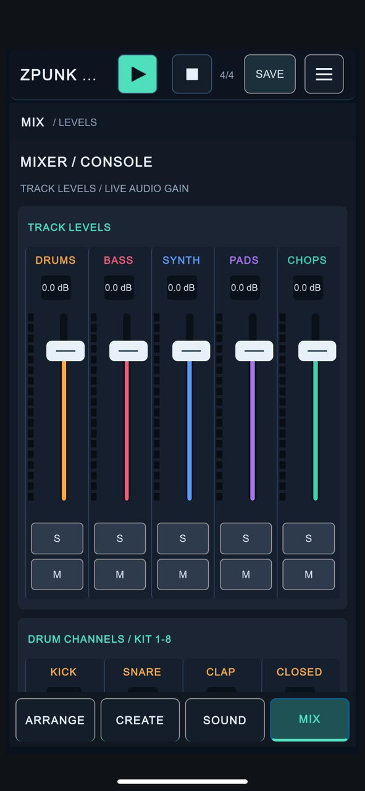
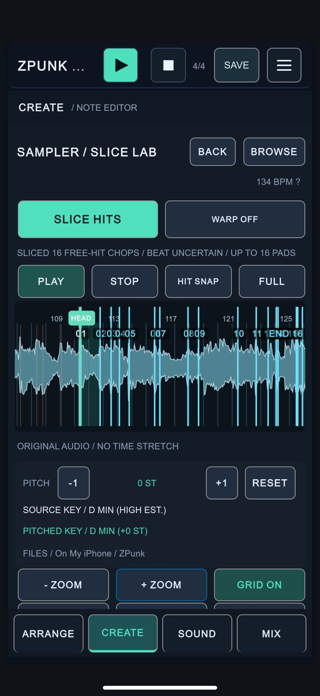

ZPUNK was never meant to be a desktop DAW squeezed onto a small screen. It was built around a different situation entirely: you have a phone in your hand, a musical idea in your head, and a few minutes to make something before the moment disappears.
That changes the design process. A phone-first groovebox has to be clear, immediate and genuinely usable in portrait mode. It has to respect thumb reach, limited space and interrupted attention. And it has to help you stay connected to music when you are away from your main setup.
Start with the situation, not the feature list
A lot of music software starts by asking what features should exist. ZPUNK started from a more practical question: what kind of music-making actually makes sense on a phone?
The answer wasn’t “everything.” It was quick idea capture, loop building and arrangement in a way that feels self-contained. Drums, bass, synths, pads and chops all live inside one compact workflow so you can move from rhythm to harmony to structure without feeling like you are constantly changing tools.
That is why the app leans toward sketching, building and keeping momentum rather than recreating a giant studio environment on a tiny display.
Why portrait mode matters
Portrait mode is one of the most defining choices in ZPUNK. It makes the app feel like something meant for an actual phone rather than a shrunken tablet interface. When you are standing on a train, sitting on a bus or waiting somewhere with only one hand free, portrait mode simply makes more sense.
It also forces discipline. There is less room to waste, which means each screen has to make its purpose obvious. You can’t just spread a workstation out sideways forever. The layout has to communicate hierarchy immediately: what matters now, what can wait, and what should stay out of the way.

Limited space creates harder, better decisions
Designing for a phone means constantly negotiating trade-offs. There are always more controls you could show, more data you could display and more options you could expose at once. But doing that too aggressively would work against the core purpose of the app.
On a phone, every extra element competes for clarity. Too much visible information makes the interface feel fiddly or tiring. Too little makes it feel shallow. The design challenge is finding a useful middle ground where the app still feels capable but remains inviting.
That tension shaped the overall UI: separate pages for tasks, compact controls, track-based color coding, and an emphasis on moving through one step of the process at a time instead of confronting everything all at once.
Designed to keep you musically fit
One of the most important ideas behind ZPUNK is that making music should not be limited to the moments when you are sitting in front of a full studio setup. A groovebox on your phone can keep your instincts active. You can test a bassline, audition a chord movement, sketch a drum pattern or chop a sample while life is happening around you.
That matters because musical habits are easier to maintain when the barrier to starting is low. If you can open an app and be inside a project quickly, you are more likely to stay creatively engaged. You don’t need a perfect environment to keep hearing rhythm, harmony and structure in your head.
ZPUNK is built around that idea of staying musically fit: not replacing the studio, but keeping the creative muscle warm when you are away from it.
Workflow before spectacle
The visual design aims to be clean, legible and direct. The app uses distinct track identities, large touch targets and a structure that encourages movement between creation, editing and arrangement without needing to relearn the interface every time you switch tasks.
That doesn’t mean the UI is trying to be minimal for its own sake. It means the interface is trying to serve the workflow. A drum sequencer should feel immediate. A piano roll should feel editable without becoming a maze. The sampler should let you find slices and map ideas quickly. Arrangement should be available without turning the whole app into a tiny, overloaded timeline.
On a phone, elegance is often less about decoration and more about not slowing the user down.
The app is intentionally self-contained
ZPUNK combines several creative roles in one place: drums, bass, synths, pads, chops, sound shaping and arrangement. That self-contained nature is part of the point. On the go, it helps to remain inside one instrument rather than jumping between apps, file systems and external utilities.
That doesn’t mean every feature should be huge. In many cases the better choice is to do a smaller number of things well and keep the path between them short. The app is less interested in sprawling complexity than in helping a user get from blank screen to living musical idea.
Restrictions are part of the design language
Making something like this involves embracing restrictions instead of pretending they do not exist. Screen size, orientation, touch accuracy, cognitive load and mobile context all push back on the design. Sometimes those limits can feel inconvenient during development. But they also clarify what the app should be.
ZPUNK is not trying to win by being the most expansive environment. Its strength is that it takes a specific purpose seriously: helping someone make electronic music on a phone, quickly and musically, in moments where a studio is unavailable.
That is why the design process always comes back to the same question: does this help someone make music more naturally on a phone, or does it just add more software?

A groovebox built for life outside the studio.
ZPUNK is designed for quickly sketching beats, basslines, synths, chords, chops and arrangements on a phone. The goal is simple: fewer barriers, faster ideas and a workflow that still feels musical when you are away from your usual setup.
Final thoughts
Portrait mode, limited space and mobile constraints are not just technical details in ZPUNK. They are part of its identity. The app is built around the idea that useful music-making on a phone should feel focused, immediate and realistic in the places people actually use phones.
Sometimes the best design decision is not adding more, but protecting the moment when an idea turns into a groove before the world interrupts.
← Back to the blog